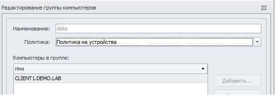
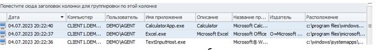
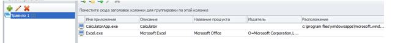
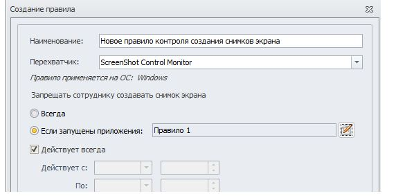
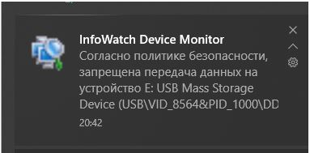
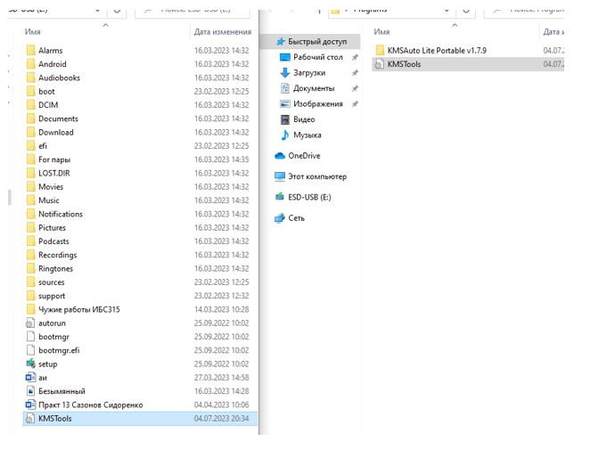
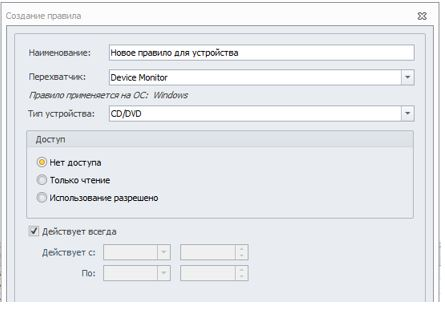
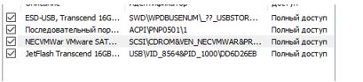
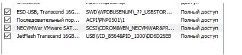

Создаем группу политик
Создаём группу ПК (если нет отдельных) и привязываем нашу политику
Создаём группу пользователей (если нет отдельных) и привязываем нашу политику

Правило 1
Необходимо запретить создание снимков экрана в табличных процессорах
(Excel или OpenOffice Calc) и калькуляторе для предотвращения утечки
секретных расчетов и баз данных.
Проверить работоспособность и зафиксировать выполнение
скриншотом.
Необходимо запретить создание снимков экрана в табличных процессорах для предотвращения утечки секретных расчетов и баз данных.
Перед этим также как и при создании первого правила требуется создать
список (во вкладке приложения) и внести в него calc (excel отсутствует) — перед этим нужно запустить
это приложения найдя его в поисковике windows

Во вкладке «Приложения» создаём список «Правило 1»
Запускаем на агенте программы, которые нужно заблокировать, находим их в логах использованный приложений, выделяем и перетаскиваем в список
Вот так должно получиться
Открываем политики, называем её как «Правило 1», ставим галку «Если запущенны приложения:» и заносим туда список «Правило 1» Сохраняем изменения, и проверяем на агенте.
Правило 2
Необходимо запретить запись файлов на все съемные носители
информации (флешки), оставив возможность чтения и копирования них.
Проверить работоспособность и зафиксировать выполнение
скриншотом.
Необходимо запретить запись файлов на все съёмные носители информации, при этом оставить возможность считывания информации.

Проверить работоспособность и зафиксировать выполнение
Правило 3
С учетом ранее созданной политики необходимо разрешить запись файлов
на доверенный носитель. Запрет на запись на остальные носители оставить в силе. Проверить работоспособность и зафиксировать настройку
скриншотами.
С учетом ранее созданной блокировки необходимо разрешить использование доверенного носителя информации.
Проверить работоспособность и зафиксировать выполнение
Правило 4
Исключить приложение cmd и powershell из перехвата Device Monitor.
Необходимо учесть разные версии для различных архитектур.
Зафиксировать выполнение скриншотом (окно настройки).
Открываем настройки DM
Правило 5
Заблокируйте доступ к CD/DVD для сотрудников.
Сотруднику из отдела 1 понадобилось воспользоваться CD/DVD,
передача информации согласована с руководством и теперь вам
необходимо осуществить выдачу временного доступа (на 30 минут)
клиенту на использование привода. Временный доступ должен быть
получен с помощью «телефона». Зафиксировать скриншотами выдачу
доступа.
 

Правило 6
Необходимо поставить на контроль буфер обмена в текстовых процессорах
(Word или Writer или Wordpad).
Проверить работоспособность и зафиксировать выполнение занесением
пары событий в IWTM на любые политики.
Правило 7
На виртуальной машине необходимо запретить использование буфера
обмена при подключении к удаленным машинам по протоколу RDP.
Проверить работоспособность попыткой копирования текста из сеанса